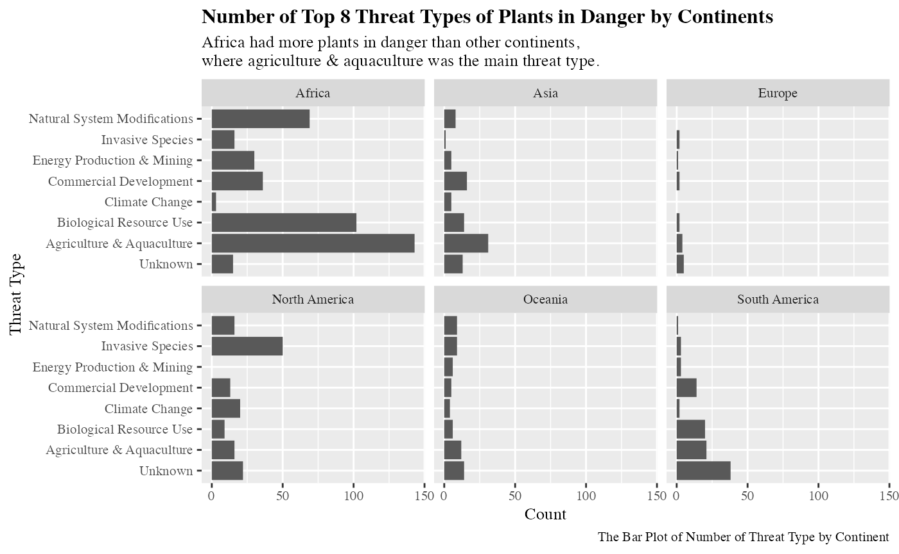
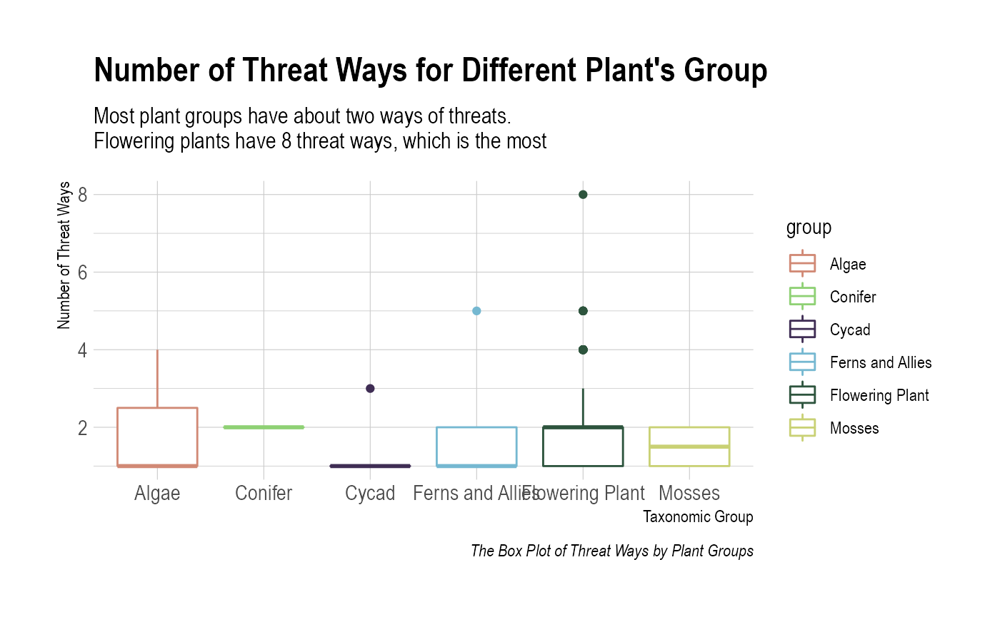
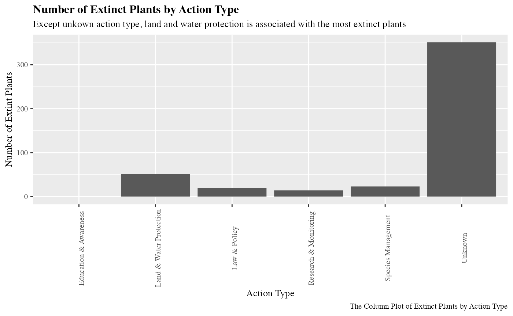

Setup
library(tidyverse)
#> ── Attaching packages ─────────────────────────────────────── tidyverse 1.3.2 ──
#> ✔ ggplot2 3.3.6 ✔ purrr 0.3.5
#> ✔ tibble 3.1.8 ✔ dplyr 1.0.10
#> ✔ tidyr 1.2.0 ✔ stringr 1.4.1
#> ✔ readr 2.1.2 ✔ forcats 0.5.2
#> ── Conflicts ────────────────────────────────────────── tidyverse_conflicts() ──
#> ✖ dplyr::filter() masks stats::filter()
#> ✖ dplyr::lag() masks stats::lag()
library(here)
#> here() starts at /Users/haoxuehomefolder/Desktop/Statistical Programming840/biostat840-project3-pkgdown-haoxue-xiang
library(purrr)
library(lubridate)
#>
#> Attaching package: 'lubridate'
#>
#> The following objects are masked from 'package:base':
#>
#> date, intersect, setdiff, union
library(hrbrthemes)Introduction
This data is about plants in danger in the world, the threats to endangered plants, and the actions. I get this data set from TidyTuesday 2020-08-18. The original data set comes from nternational Union for Conservation of Nature (IUCN) Red list of Threatened Species (Version 2020-1). The link to the data dictionary can be found on TidyTuesday webpage.
Through using this data set, I aim to explore more about threat types of plants in the world, the relationship between threat types and plant groups, and the effectiveness of actions.
Loading Dataset
if(!dir.exists(here("data"))) { dir.create(here("data")) }
# saves data only once (not each time you knit a R Markdown)
if(!file.exists(here("data","plants.RDS"))) {
plants <- readr::read_csv('https://raw.githubusercontent.com/rfordatascience/tidytuesday/master/data/2020/2020-08-18/plants.csv')
actions <- readr::read_csv('https://raw.githubusercontent.com/rfordatascience/tidytuesday/master/data/2020/2020-08-18/actions.csv')
threats <- readr::read_csv('https://raw.githubusercontent.com/rfordatascience/tidytuesday/master/data/2020/2020-08-18/threats.csv')
# save the file to RDS objects
saveRDS(plants, file= here("data","plants.RDS"))
saveRDS(actions, file= here("data","actions.RDS"))
saveRDS(threats, file= here("data","threats.RDS"))
}
plants <- readRDS(here("data","plants.RDS"))
actions <- readRDS(here("data","actions.RDS"))
threats <- readRDS(here("data","threats.RDS"))Data Wrangling & Visualizations
- How did threat type of plants differ by continent in the world?
threattype8 = threats %>%
filter(threatened ==1) %>%
group_by(threat_type) %>%
count() %>%
arrange(desc(n)) %>%
head(8)
threats %>%
filter(threatened ==1 & threat_type %in% threattype8$threat_type) %>%
ggplot(aes(y=fct_relevel(threat_type, "Unknown"))) +
geom_bar() +
facet_wrap(.~continent, ncol=3) +
labs(x='Count', y='Threat Type', title="Number of Top 8 Threat Types of Plants in Danger by Continents", subtitle="Africa had more plants in danger than other continents, \nwhere agriculture & aquaculture was the main threat type.", caption = 'The Bar Plot of Number of Threat Type by Continent') +
theme(text=element_text(size=10, family="Times"), plot.title=element_text(size=12, face='bold'))
- Which plant groups had the most threatening ways?
plants %>%
select(group, threat_AA:threat_NA) %>%
mutate(threat_ways = reduce(select(.,-group), `+`)) %>%
ggplot(aes(x=group, y=threat_ways, col=group)) +
geom_boxplot() +
labs(x='Taxonomic Group', y='Number of Threat Ways', title="Number of Threat Ways for Different Plant's Group", subtitle="Most plant groups have about two ways of threats. \nFlowering plants have 8 threat ways, which is the most", caption = 'The Box Plot of Threat Ways by Plant Groups') +
scale_color_ipsum() +
theme_ipsum()
- Which type of action was worst? (related to most extinct plants)
actions %>%
filter(action_taken == 1) %>%
split(.$action_type) %>%
map_dfr(~sum(.$red_list_category == 'Extinct')) %>%
pivot_longer(`Education & Awareness`: Unknown, names_to = "action_type", values_to = 'num_of_extinct') %>%
ggplot(aes(x=action_type, y=num_of_extinct)) +
geom_col() +
labs(x='Action Type', y='Number of Extint Plants', title="Number of Extinct Plants by Action Type", subtitle="Except unkown action type, land and water protection is associated with the most extinct plants", caption = 'The Column Plot of Extinct Plants by Action Type') +
theme(text=element_text(size=10, family="Times"), plot.title=element_text(size=12, face='bold'), axis.text.x = element_text(angle = 90))
Summary
Based on the analysis and data visualizations, Africa has the most extinct or endangered plants. Agriculture and aquaculture is the most serious threat in Africa and lots of other places in the world. Flowering plants can have the most threatening ways and land & water protection seems to be the worst action type, which may explain why Agriculture and aquaculture is the most serious threat.